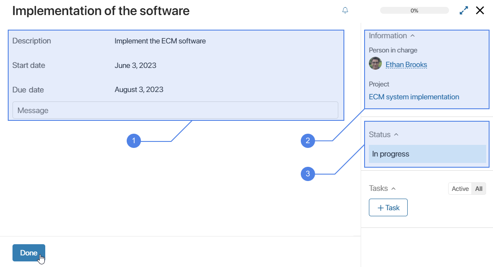
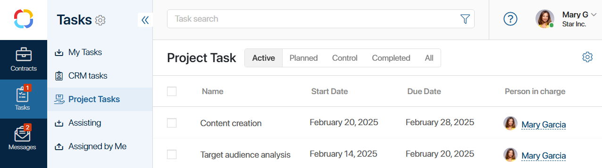
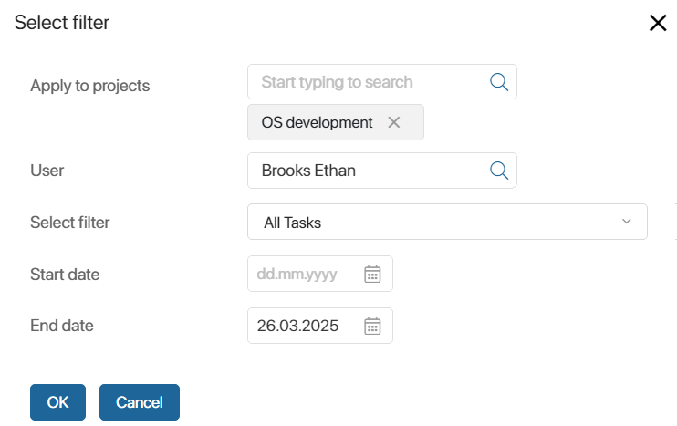

После публикации плана исполнитель задачи и сотрудник с правом редактировать план могут просмотреть её в карточке проекта на вкладке Календарный план. Для этого наведите курсор на название задачи, нажмите на три точки и выберите Открыть.

Здесь же можно:
- изменить процент выполнения задачи;
- завершить или вернуть в работу задачи с типами Задача и Контрольная точка;
- просмотреть задачи с типами Процесс и Фазовая задача. Задача с типом Процесс автоматически выполнится в дату, указанную при создании этой задачи. Фазовая задача завершится, когда выполнятся все включённые в неё задачи плана;
- просмотреть связанные задачи, если администратор настроил их видимость.
Также сотрудники, назначенные ответственными по задачам с типами Задача и Контрольная точка, могут просмотреть их и взять в работу:
- в разделе Задачи в группе Проектные задачи;
- в карточке проекта в виджетах Все задачи и Просроченные задачи;
- в виджете Доска проекта, если администратор добавил его на карточку проекта.
Участники задачи могут посмотреть её карточку только в разделе Задачи > Проектные задачи и вести переписку в ленте задачи. Им недоступно изменение и завершение задачи.
Отображение проектных задач
В разделе Задачи > Проектные задачи выберите удобный вариант отображения задач:
- Текущие — задачи, назначенные на текущую дату, а также с процентом выполнения больше нуля;
- Планируемые — задачи с датой начала позднее текущей даты;
- Контроль — завершённые задачи, для которых включена отправка на контроль руководителю проекта;
- Завершенные — все выполненные задачи;
- Все — все задачи, назначенные на сотрудника, включая отменённые, а также задачи со статусом В архиве и восстановленные из архива.

Список задач в карточке проекта
В карточке проекта на вкладке Основная вы увидите виджеты:
- Все задачи — отображает все назначенные вам задачи по текущему проекту;
- Просроченные задачи — показывает только просроченные задачи по проекту. Они отмечены красной точкой.
Вы можете настроить список. Для этого нажмите  и выберите опцию:
и выберите опцию:
- Настройка таблицы — укажите набор полей, которые отобразятся в списке задач, а также вариант сортировки;
- Настройки фильтра — установите параметры фильтрации задач:
- перечень проектов, участником которых вы являетесь;
- исполнитель, задачи которого хотите увидеть в списке;
- фильтр, позволяющий отобразить все задачи, только просроченные или задачи без исполнителя;
- сроки задач.
Например, в виджете Все задачи отобразите задачи, которые нужно выполнить до определённой даты.

Аналогичные настройки можно выполнить в виджете Контрольные точки по проекту/проектам, если администратор системы добавил его на форму карточки.
Также администратор системы может отобразить список задач на отдельной вкладке карточки проекта с разбивкой их по статусам на канбан-доске. Подробнее об этом читайте в статье «Доска задач проекта».
Карточка проектной задачи
Нажмите на название задачи, чтобы открыть её карточку. Здесь отображается следующая информация:

- Описание задачи плана, плановые сроки её выполнения, родительская задача или подзадачи при их наличии, а также ассоциированная лента.
- Ответственный за выполнение задачи, участники и ссылка на связанный проект.
- Статус выполнения задачи.
Также на боковой панели карточки отобразится список связанных задач, если администратор системы настроил их видимость.
Если у вас установлено решение Трудозатраты и на карточку задачи добавлен виджет по трудозатратам, дополнительно вы увидите:
- кнопку Подать трудозатраты — нажмите её, чтобы создать запись о трудозатратах по задаче плана;
- блок Лимиты — отображается только для руководителя проекта. Здесь можно устанавливать лимиты трудозатрат по проектной задаче.
В ходе работы укажите процент выполнения задачи в её карточке. Тогда участники проекта увидят эту информацию на диаграмме плана.
Если процент изменить в плане на отрезке задачи, то в её карточке изменение также отобразится.
Обратите внимание, в карточке Фазовой задачи вместо процента выполнения вы увидите отметку Не выполнено или Выполнена. Такая задача завершится автоматически при выполнении всех её подзадач.
Чтобы закрыть задачу плана проекта, нажмите кнопку Сделано. В плане на отрезке этой задачи отобразится Готово, она будет подсвечена более тёмным цветом. В карточке задачи рядом с плановой датой выполнения вы увидите фактическую дату её завершения.
Если при создании задачи выбрана опция Отправить на контроль, в карточке задачи вместо кнопки Сделано отобразится На контроль. Нажмите её, чтобы завершить задачу. После этого руководителю проекта поступит задача проверить выполненную работу.
Завершённую задачу можно вернуть в работу.
Статусы задач плана
Задачи плана с типами Задача и Контрольная точка могут иметь один из следующих системных статусов:
- Черновик — задача, созданная в черновике плана до его публикации, а также задача плана проекта, восстановленного из архива;
- В работе — задача опубликованного плана, а также задача, которую вернули в работу после её выполнения;
- Выполнена — этот статус присваивается задаче в следующих случаях:
- сотрудник закрыл задачу, нажав кнопку Сделано в её карточке;
- руководитель проекта проверил выполнение задачи исполнителя и нажал кнопку Принять в своей задаче контроля. Опция применяется, если автор задачи при её создании включил отправку на контроль;
- исполнитель задачи или сотрудник с правом редактировать план на диаграмме плана изменил процент выполнения задачи на 100% или в контекстном меню задачи выбрал действие Выполнить. Это действие доступно как при просмотре, так и при редактировании плана;
- Отменена — статус присваивается задаче после публикации версии плана, в которой она удалена;
- В архиве — задача переходит в этот статус при перемещении проекта в архив;
- Контроль — статус присваивается, когда исполнитель нажимает в карточке задачи кнопку На контроль, чтобы завершить её. Доступно для задач с включённой опцией отправки на контроль.
Эти статусы для задач плана с типами Задача и Контрольная точка установлены по умолчанию, изменить их или добавить новые статусы может администратор.
Статус можно просмотреть в карточке задачи, если открыть её:
- в разделе Задачи > Проектные задачи — здесь отображаются все задачи, кроме созданных в черновике плана проекта до его публикации;
- в карточке проекта в виджетах Все задачи и Просроченные задачи — здесь отображаются только задачи со статусом В работе.
Пользовательские статусы для задач конкретного проекта может добавить его руководитель, если в карточке проекта настроен виджет Доска проекта. Эти статусы можно увидеть на отдельной вкладке карточки в виде канбан-доски. Здесь удобно перемещать задачу в колонку с нужным статусом. Подробнее читайте в статье «Доска задач проекта».
Процент выполнения задач плана
Чтобы все участники проекта понимали, на каком этапе выполнения находится задача плана, исполнителем которой вы являетесь, измените процент её выполнения. Это можно сделать двумя способами:
- в карточке задачи — при этом процент автоматически изменится в плане проекта на отрезке задачи;
- в плане проекта — наведите курсор на отрезок задачи и переместите ползунок вправо. При этом в карточке задачи изменение тоже отобразится.

Кроме исполнителя изменить процент выполнения задачи может сотрудник с правом редактировать план.
Выполненная задача отобразится зачёркнутой. На её отрезке вы увидите отметку Готово.
Фазовая задача закроется, когда выполнятся все подзадачи, входящие в неё. Обратите внимание, процент выполнения задачи с типом Задача не зависит от выполнения её дочерних задач.
Задача типа Процесс закроется, когда завершится запущенный процесс.
Завершённая задача типа Контрольная точка отобразится в плане проекта в виде ромба зелёного цвета.
Если в карточке проекта настроено отображение задач в виде канбан-доски с их распределением по статусам, вы можете завершить задачу с типом Задача или Контрольная точка, переместив её в колонку со статусом Выполнена. При этом отметка о выполнении задачи отобразится как в карточке задачи, так и в плане проекта. Подробнее читайте в статье «Доска задач плана».
Прогнозные сроки выполнения задач
Для задач с типами Задача и Контрольная точка и статусом В работе можно устанавливать и запрашивать у исполнителей прогнозные сроки выполнения их задач. Это позволит сравнить сроки выполнения, предполагаемые на текущий день, с плановыми. Подробнее об этом читайте в статье «Установить прогнозные сроки».
Контроль выполнения задачи
Когда исполнитель завершит задачу, с включённой опцией Отправить на контроль, руководитель получит задачу проверки выполненной работы. Она отобразится в разделе Задачи > Проектные задачи на вкладке Контроль. В плане проекта на отрезке задачи исполнителя появится пометка !Контроль.
Руководитель проекта может:
- вернуть задачу в работу, указав комментарий;
- принять выполнение задачи. Тогда она перейдёт в статус Выполнена, а в плане проекта на отрезке этой задачи отобразится Готово.
Исполнитель может вернуть задачу на контроле к себе в работу.
Вернуть задачу плана в работу
Если у вас есть право редактировать план, вы можете заново открыть выполненную задачу одним из следующих способов:
- в плане проекта наведите курсор на отрезок задачи и переместите ползунок влево, установив меньший процент выполнения;
- в плане проекта в контекстном меню задачи выберите пункт Вернуть в работу. Это действие доступно как при просмотре, так и при редактировании плана.
Также исполнитель задачи может вернуть её в работу. Для этого в разделе Задачи > Проектные задачи перейдите на вкладку:
- Завершенные или Все — откройте карточку выполненной задачи и нажмите кнопку Открыть заново;
- Контроль — откройте карточку задачи контроля, которая создана для руководителя проекта, и нажмите кнопку Вернуть в работу.
Уведомления о проектных задачах
Исполнитель задачи плана получает в #ленту оповещения:
- о новой задаче плана;
- об изменении плановых и прогнозных сроков задачи плана;
- об изменении исполнителя задачи плана.
Участник задачи получает в #ленту оповещения:
- о задаче, в которую он добавлен участником;
- об изменении информации в задаче, например её описания, статуса, сроков, списка участников, процента выполнения;
- о сообщениях в #ленте задачи.
Также уведомления отправляются руководителю проекта и исполнителю проектной задачи в следующих случаях:
- задача выполнена, а также закрыта, удалена или открыта заново сотрудником с правом редактировать план. В карточке задачи, созданной или открытой в плане проекта, можно отключить отправку оповещения о её о выполнении;
- задача просрочена — уведомления об этом поступают ежедневно. В сообщении для руководителя указывается исполнитель просроченной задачи;
- план проекта отправлен в архив.
Такие уведомления не отображаются в ленте проекта. Отключить их нельзя.
По задачам с типами Процесс и Фазовая задача уведомления не отправляются.